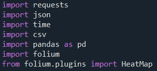
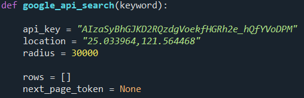
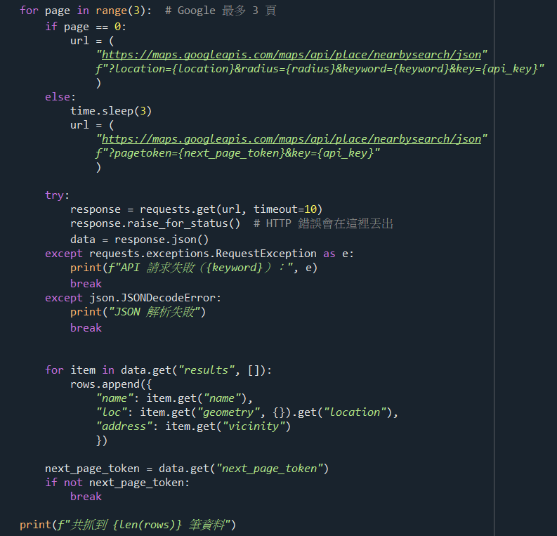
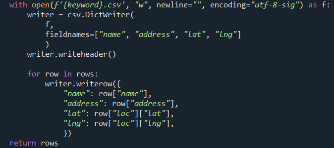
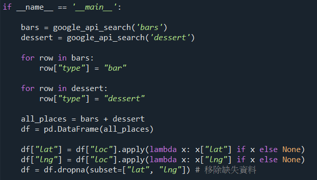
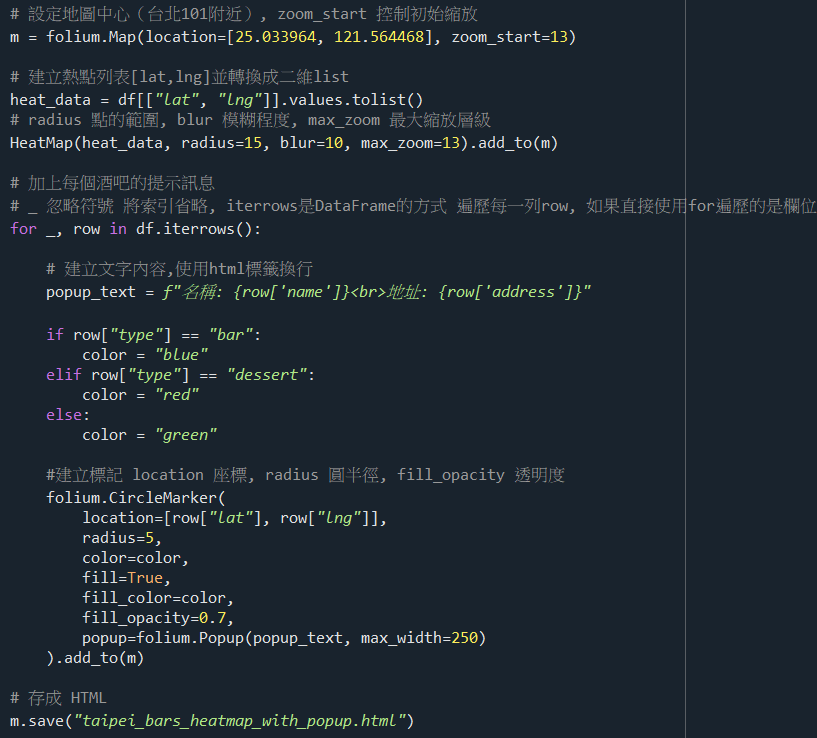

資料視覺化結果整理

匯入所需的模組。

定義 google_api_search 的方程，參數放入想搜尋的關鍵詞，完成基礎參數設定。

設置迴圈，第一次抓取原始檔案，第二次開始加上next_page_token的元素後繼續抓取， 每次抓取時設定例外處理，避免沒抓到資料而中斷， 每抓一次資料就先處理，將資料放入results，並切割資料， 最後設置如果抓取的資料中未包含next_page_token的元素， 就break結束迴圈，並印出總共抓到幾筆資料。

將資料存成csv檔，並賦予每個值欄位，最後回傳資料。

使用定義方程式搜尋需要的資料，分別為bars跟dessert新增標籤方便之後辨別， 並將兩個資料合併轉為DataFrame， 接著處理資料，將經緯度分開並移出缺失資料。

設置地圖基礎設定，並將資料轉型為熱點圖能用的資料， 使用迴圈遍歷資料，並創建圖標的文字內容與樣式， 最後存取html檔。